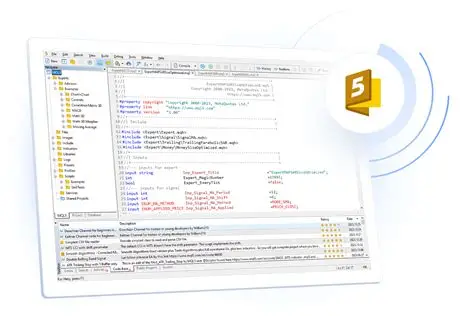

ABOUT ME
This Is Me
Jenjang Pendidikan
Perminatan
|
Peminatan

Sejak pertama kali mengenal dunia trading, saya selalu penasaran bagaimana orang bisa mengambil keputusan beli atau jual dengan cepat.
Awalnya saya hanya mengikuti feeling atau berita pasar, tapi seringkali hasilnya tidak konsisten. Kemudian saya menemukan Expert Advisor
(EA) di MetaTrader 5, yaitu program yang bisa menjalankan strategi trading secara otomatis. Saya langsung tertarik karena ini menggabungkan
minat saya di teknologi, pemrograman, dan logika, sekaligus memberi peluang untuk belajar membuat sistem trading sendiri.
Saat mulai belajar membuat EA, saya menyadari bahwa prosesnya menantang tapi juga menyenangkan. Saya harus memahami bahasa
pemrograman MQL5, logika trading, dan cara membaca data harga pasar. Misalnya, EA yang saya buat harus bisa mendeteksi tren
harga, menentukan kapan harus masuk posisi, dan kapan harus keluar. Rasanya seperti merancang “robot pintar” yang bekerja
di pasar 24 jam tanpa lelah. Setiap kali EA berhasil menjalankan strategi dengan benar di akun demo, saya merasa senang
dan semakin termotivasi untuk mengembangkan kemampuan saya.
Minat saya dalam quant trading dan pengembangan EA terus tumbuh seiring waktu. Saya belajar bagaimana mengoptimasi strategi,
membaca sinyal pasar, dan mengurangi risiko kerugian. Selain itu, saya juga merasa senang karena bisa memadukan ilmu komputer
dan investasi, dua hal yang saya sukai. Tujuan saya ke depan adalah membuat EA yang cerdas dan efektif, sehingga bisa membantu
trader lain dan tentunya mengembangkan kemampuan saya sendiri di dunia trading otomatis. Pengalaman ini membuat saya semakin
yakin bahwa belajar EA bukan hanya soal untung-rugi, tapi juga soal kreativitas, logika, dan kesabaran.
|